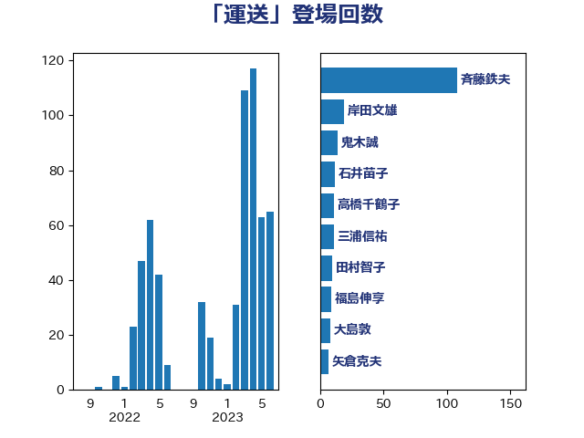

単語「運送」

| 斉藤鉄夫 | 公明党 | 108 回 |
| 岸田文雄 | 自由民主党 | 19 回 |
| 鬼木誠 | 立憲民主党 | 14 回 |
| 石井苗子 | 日本維新の会 | 12 回 |
| 高橋千鶴子 | 日本共産党 | 11 回 |
| 三浦信祐 | 公明党 | 11 回 |
| 田村智子 | 日本共産党 | 10 回 |
| 福島伸享 | 無所属 | 9 回 |
| 大島敦 | 立憲民主党 | 8 回 |
| 矢倉克夫 | 公明党 | 7 回 |
| 田村まみ | 国民民主党 | 7 回 |
| 枝野幸男 | 立憲民主党 | 7 回 |
| 川崎ひでと | 自由民主党 | 7 回 |
| 吉井章 | 自由民主党 | 7 回 |
| 中野洋昌 | 公明党 | 7 回 |
| 野田国義 | 立憲民主党 | 6 回 |
| 輿水恵一 | 公明党 | 6 回 |
| 谷田川元 | 立憲民主党 | 6 回 |
| 若松謙維 | 公明党 | 6 回 |
| 森屋隆 | 立憲民主党 | 6 回 |
| 伊藤渉 | 公明党 | 5 回 |
| 伊波洋一 | 無所属 | 5 回 |
| 一谷勇一郎 | 日本維新の会 | 5 回 |
| たがや亮 | れいわ新選組 | 5 回 |
| おおつき紅葉 | 立憲民主党 | 5 回 |
| 高橋光男 | 公明党 | 4 回 |
| 野間健 | 立憲民主党 | 4 回 |
| 西村康稔 | 自由民主党 | 4 回 |
| 稲富修二 | 立憲民主党 | 4 回 |
| 石川大我 | 立憲民主党 | 4 回 |
| 青木愛 | 立憲民主党 | 3 回 |
| 金子恵美 | 立憲民主党 | 3 回 |
| 蓮舫 | 立憲民主党 | 3 回 |
| 落合貴之 | 立憲民主党 | 3 回 |
| 神津たけし | 立憲民主党 | 3 回 |
| 礒崎哲史 | 国民民主党 | 3 回 |
| 田中健 | 国民民主党 | 3 回 |
| 渡辺猛之 | 自由民主党 | 3 回 |
| 浜野喜史 | 国民民主党 | 3 回 |
| 小森卓郎 | 自由民主党 | 3 回 |
| 加藤勝信 | 自由民主党 | 3 回 |
| 長友慎治 | 国民民主党 | 2 回 |
| 鈴木義弘 | 国民民主党 | 2 回 |
| 鈴木俊一 | 自由民主党 | 2 回 |
| 里見隆治 | 公明党 | 2 回 |
| 足立敏之 | 自由民主党 | 2 回 |
| 緒方林太郎 | 無所属 | 2 回 |
| 秋野公造 | 公明党 | 2 回 |
| 石川香織 | 立憲民主党 | 2 回 |
| 石井啓一 | 公明党 | 2 回 |
| 盛山正仁 | 自由民主党 | 2 回 |
| 片山さつき | 自由民主党 | 2 回 |
| 津島淳 | 自由民主党 | 2 回 |
| 江田憲司 | 立憲民主党 | 2 回 |
| 柴田巧 | 日本維新の会 | 2 回 |
| 後藤茂之 | 自由民主党 | 2 回 |
| 小沢雅仁 | 立憲民主党 | 2 回 |
| 室井邦彦 | 日本維新の会 | 2 回 |
| 塩田博昭 | 公明党 | 2 回 |
| 城井崇 | 立憲民主党 | 2 回 |
| 國重徹 | 公明党 | 2 回 |
| 高木陽介 | 公明党 | 1 回 |
| 須藤元気 | 無所属 | 1 回 |
| 青島健太 | 日本維新の会 | 1 回 |
| 長浜博行 | 無所属 | 1 回 |
| 長峯誠 | 自由民主党 | 1 回 |
| 鈴木敦 | 国民民主党 | 1 回 |
| 鈴木宗男 | 日本維新の会 | 1 回 |
| 野田聖子 | 自由民主党 | 1 回 |
| 萩生田光一 | 自由民主党 | 1 回 |
| 船橋利実 | 自由民主党 | 1 回 |
| 細田健一 | 自由民主党 | 1 回 |
| 紙智子 | 日本共産党 | 1 回 |
| 笠井亮 | 日本共産党 | 1 回 |
| 福重隆浩 | 公明党 | 1 回 |
| 福島みずほ | 社会民主党 | 1 回 |
| 磯崎仁彦 | 自由民主党 | 1 回 |
| 石川博崇 | 公明党 | 1 回 |
| 石原正敬 | 自由民主党 | 1 回 |
| 石井章 | 日本維新の会 | 1 回 |
| 石井浩郎 | 自由民主党 | 1 回 |
| 石井拓 | 自由民主党 | 1 回 |
| 渡辺周 | 立憲民主党 | 1 回 |
| 深澤陽一 | 自由民主党 | 1 回 |
| 浜田靖一 | 自由民主党 | 1 回 |
| 浜地雅一 | 公明党 | 1 回 |
| 浜口誠 | 国民民主党 | 1 回 |
| 浅田均 | 日本維新の会 | 1 回 |
| 河西宏一 | 公明党 | 1 回 |
| 江藤拓 | 自由民主党 | 1 回 |
| 武村展英 | 自由民主党 | 1 回 |
| 櫛渕万里 | れいわ新選組 | 1 回 |
| 榛葉賀津也 | 国民民主党 | 1 回 |
| 梅村みずほ | 日本維新の会 | 1 回 |
| 松野博一 | 自由民主党 | 1 回 |
| 松本剛明 | 自由民主党 | 1 回 |
| 木原稔 | 自由民主党 | 1 回 |
| 山際大志郎 | 自由民主党 | 1 回 |
| 尾身朝子 | 自由民主党 | 1 回 |
| 大野泰正 | 自由民主党 | 1 回 |
| 大串博志 | 立憲民主党 | 1 回 |
| 伴野豊 | 立憲民主党 | 1 回 |
| 伊藤孝江 | 公明党 | 1 回 |
| 伊佐進一 | 公明党 | 1 回 |
| 今枝宗一郎 | 自由民主党 | 1 回 |
| 井坂信彦 | 立憲民主党 | 1 回 |
| 中川康洋 | 公明党 | 1 回 |
| 中山展宏 | 自由民主党 | 1 回 |
| 上野賢一郎 | 自由民主党 | 1 回 |
| 上田清司 | 国民民主党 | 1 回 |
| 三上えり | 立憲民主党 | 1 回 |
| ながえ孝子 | 無所属 | 1 回 |